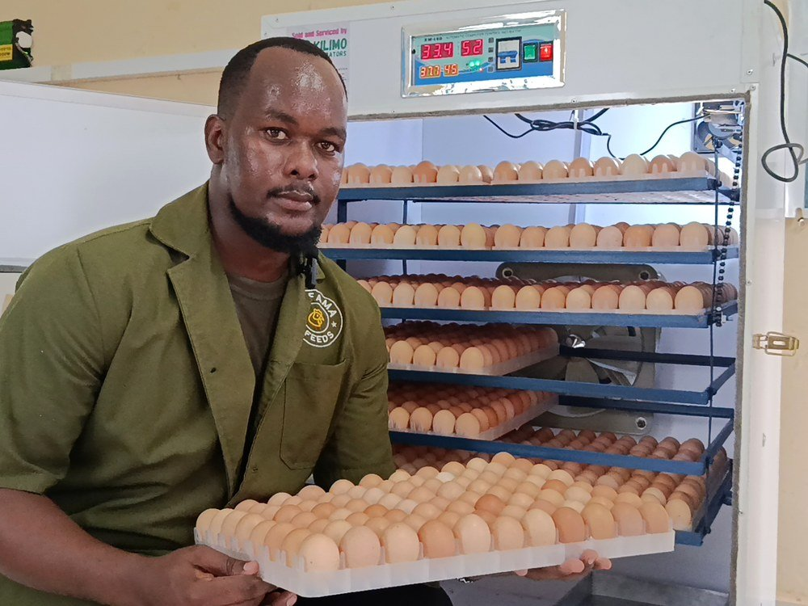
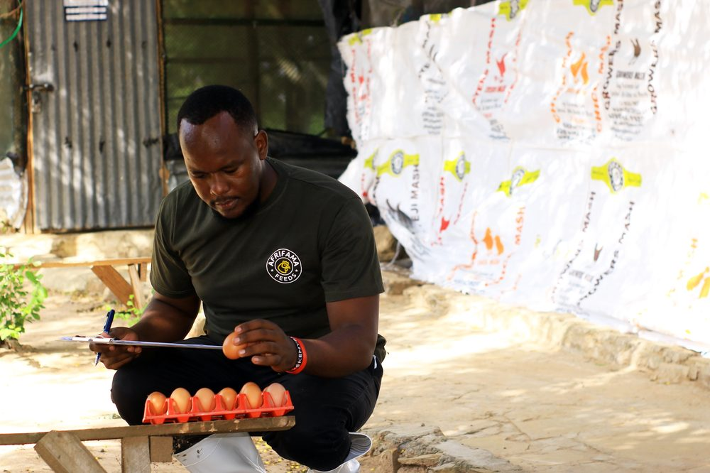
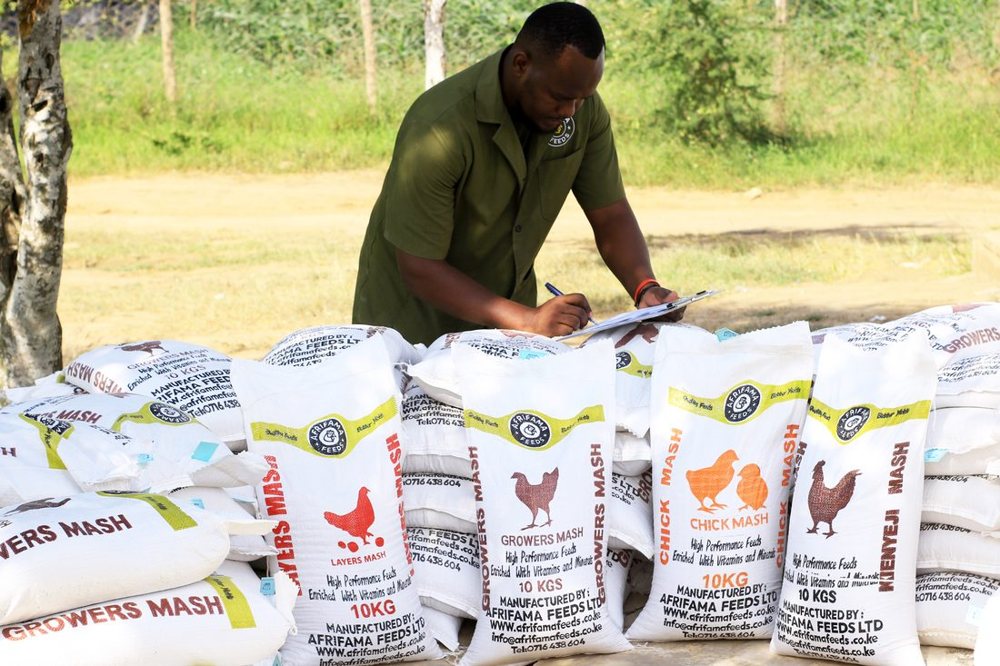
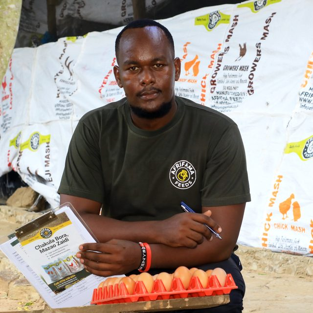
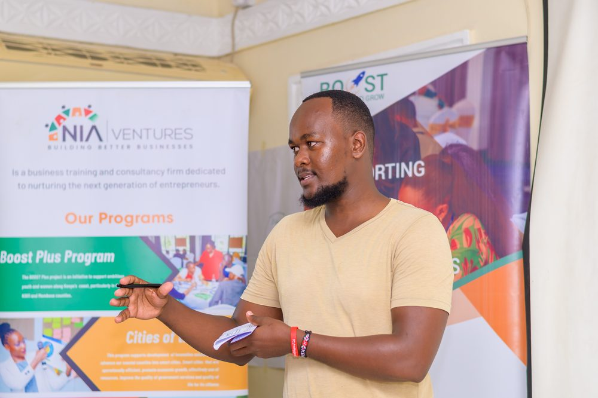
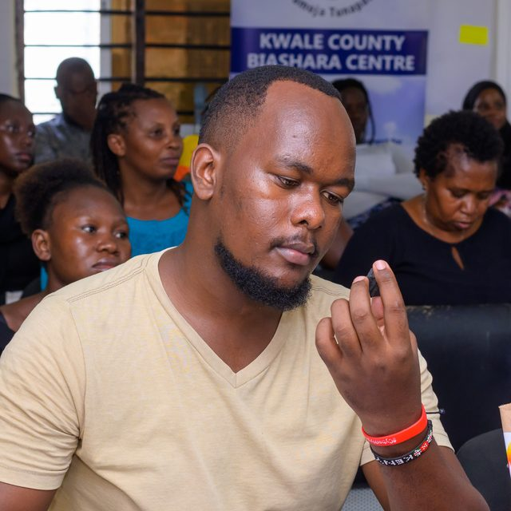
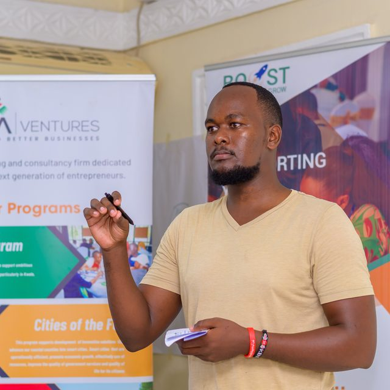
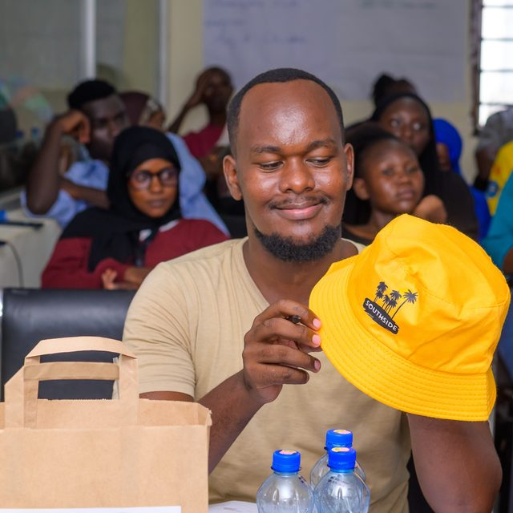

Founder · Builder · Storyteller
I'm Njuguna Hilary — a young entrepreneur from Coastal Kenya, building real businesses from the ground up, and documenting the whole journey honestly.
My journey began with a love for entrepreneurship, leadership, and agribusiness — and a stubborn belief that real change starts at the grassroots. That belief led me to study Entrepreneurship and Business Management at Moi University, where Prof. Nassiuma inducted our class into entrepreneurship on the very first day.
He wasn't just my favourite lecturer; he was a trailblazer who shaped how I see business — not only as a way to make money, but as a tool to solve real problems. I chose entrepreneurship because I see it as a gateway to development, and a real answer to the unemployment facing young people in my region and across Africa.
But most of my lessons haven't come from a lecture hall. They've come from the field, the chicken house, and the daily grind of building something that didn't exist before.

The vision for Afrifama Poultry was clear, but the road was not. Early on, Afrifama hit the harsh reality of near-bankruptcy — and then a severe feed shortage that threatened the entire farm. With no good options in the market, the future hung in the balance.
Instead of giving up, we turned to innovation. We researched and built Afrifama Feeds — manufacturing affordable feed from local waste materials. That breakthrough didn't just save the farm; it became a second business, and a lifeline for other farmers facing the same wall.
Each setback, it turns out, was a setup for a comeback.

Today Afrifama is two ventures — Afrifama Poultry and Afrifama Feeds — built around one question: what if we could use business to solve real problems in our communities, starting with food, income, and opportunity?
Our feed mill turns local waste — maize bran, wheat bran, sunflower cake, fishmeal — into high-quality Chick, Growers, Layers, and Kienyeji Mash, cutting the single biggest cost in poultry farming. But we don't just produce. We document, share, and educate — because the goal was never one Afrifama farm. It's an Afrifama farmer network.

Building Afrifama taught me that you don't need a huge donation to make an impact — you can use your voice. So I do.
I've trained and mentored young entrepreneurs across Kenya, judged more than 120 startup pitches, and trained 130 youth through the Go Blue project with Cap Youth Empowerment Institute. I launched Kukuza, a program empowering young people in Kilifi through sustainable poultry farming, and I've facilitated sessions on the Business Model Canvas for the Boost Plus program — sharpening my own thinking along the way through the Sinapis Entrepreneur Academy and the AKEFEMA convention.
My aim is simple: to inspire the next generation of builders, and to become a changemaker and leading entrepreneur in Sub-Saharan Africa.

Business should meet real social and physical needs — especially for the youth, who carry the heaviest weight of unemployment.
Real change starts at the grassroots — with individuals and communities building, not waiting on handouts.
Don't just produce. Share, teach, and show the unfiltered journey — the lessons you don't see in funding decks.
One voice and a little expertise can be a catalyst for change. You don't have to be big to make an impact.
Aspire · Inspire · Change
I sat down to talk through my journey — and how I actually raised capital for Afrifama. The honest version, in my own voice.



Whether you're raising chicks or raising capital — if you're trying to build something real, I'd love to hear from you.